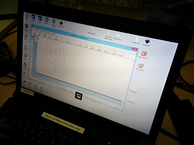
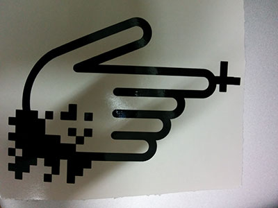
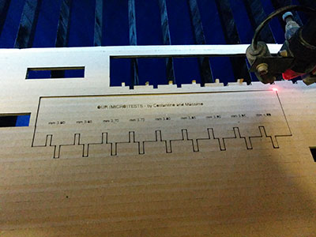
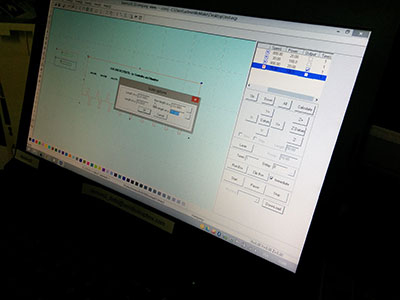
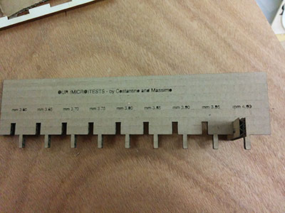
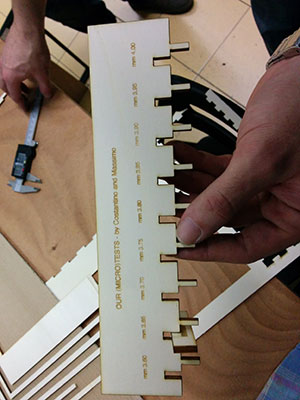
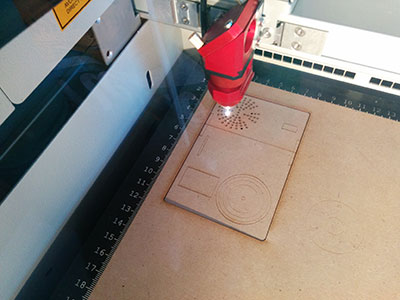
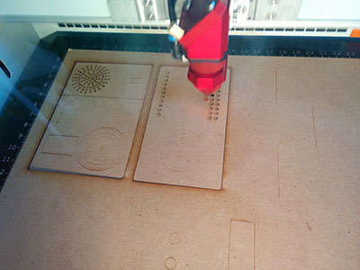
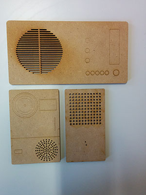
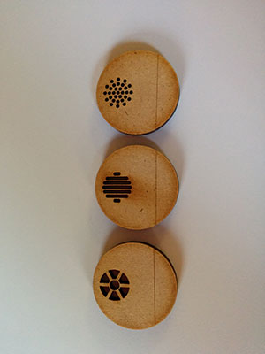

Exercise 03 - Computer-controlled cutting
Assignement
Design, make, and document a press-fit construction kit.
My approach
I divided my assignment into two parts:
Vinyl Cutter
I created and cut a sticker representing a concept of making: an analogue/digital hand. I am started to create an illustration using Illustrator CS6. Starting from a picture, I created an iconic hand. Then, I modified the icon adding some graphic pixels. Finally, I used the Vinyl Cutter (Roland DG GX-24) using the following parameters: 50cm/s - 80gf - 0.230mm
 
Laser Cutter and Press-fit construction kit
Firstly I tried to explore the basic rules of engraving and cutting. Together with Costantino Bongiorno we prepared (at WeMake Fab lab) a couple of tests to evaluate the correct shape and size of the joints in relation to the material (cardboard and plywood).
   Secondly, I tried to take confidence with laser cutter, learning basic cutting and engraving techniques. I started to re-design a set of interfaces conceived by german designer Dieter Rams for Braun products (http://en.wikipedia.org/wiki/Dieter_Rams). I created a mix of holes and lines experimenting different strokes. I engraved and cut its. Another small exercises concerns the creation of a small 2D tools, a micro-loom (my girlfriend teaches textile design, so she can use it to better explain basic textile techniques). For this exercise I tried to use a small sheet of MDF (3 mm). I like the aspect of this material. Is very hard to cut but the edges are not so burned, as in the case of plywood. For these small experiments I used a Laser Trotec 300 (using plywood settings: Speed= 600.00 and Power= 80.00).     Finally, in order to create a press-fit construction kit, I tried to transform the micro-case of my project into a first version of a cardboard model that can be easily materialized with a laser cutter. The structure is ok but I commise a mistake in the development of the joints. This part made by For this work, I used another laser cutter (a Chinese one) with the following settings:
Download
Lessons learnt
First of all I learnt that the control of the joints is essential. It is an empiric processes that people can better learn through trials and errors.I think laser cutter is perfect to create and test the first version of a smart thing. You can use this machine to create the essential structure (skeletons) In this way all internal components are often visible. Finally, It is not expensive, you can use low cost materials. Finally, I think laser cutting complex structures and objects needs nesting. It is very important to safe materials.